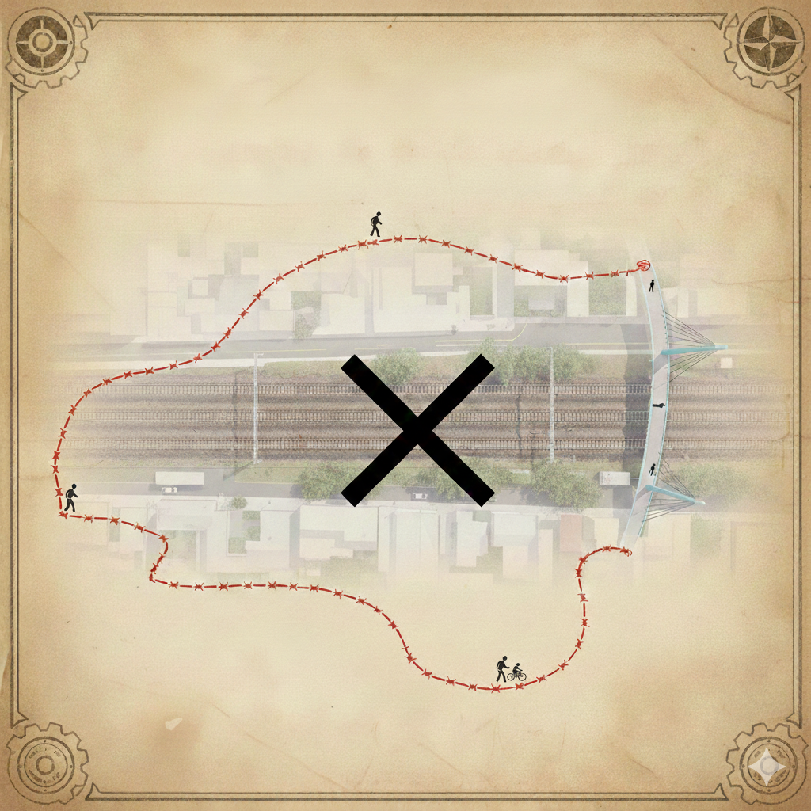

Experience the Divide
Walk the current detour route around the Eveleigh rail corridor and experience the challenge it creates for pedestrians and cyclists. The 3.5 km detour adds unnecessary time and distance to everyday journeys.

- North-South connectivity is interrupted.
- Daily commutes for workers and residents are inefficient.
- A direct bridge will enhance walkability and safety.